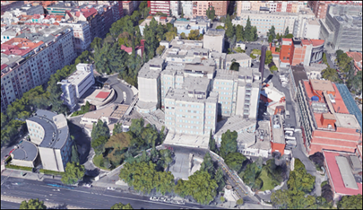

Actividad del Hospital General Universitario Gregorio Marañón
Nuestro hospital desarrolla un programa clínico dedicado al manejo de la infección por C. difficile y a la aplicación del TMF. Se trata de un servicio altruista, integrado en el sistema sanitario público y orientado exclusivamente al beneficio de los pacientes.
Nuestro trabajo incluye
- Atención especializada a pacientes con infección recurrente por C. difficile.
- Banco de heces y TMF en cápsulas.
- Procesamiento seguro y estandarizado de muestras.
- Coordinación entre Enfermedades Infecciosas, Microbiología, Gastroenterología y Hematología.
- Investigación y formación en microbiota y TMF.
Hospital General Universitario Gregorio Marañón
Centro de referencia
- Atención especializada y multidisciplinar
- Banco de heces y TMF en cápsulas
Servicios que coordinan el programa
- Enfermedades Infecciosas
- Microbiología
- Gastroenterología
- Hematología
Docencia e investigación
- Formación en microbiota y TMF
- Proyectos científicos
Dónde estamos
- Madrid · Metro O'Donnell
- Equipo multidisciplinar
Servicio altruista, integrado en el sistema sanitario público
